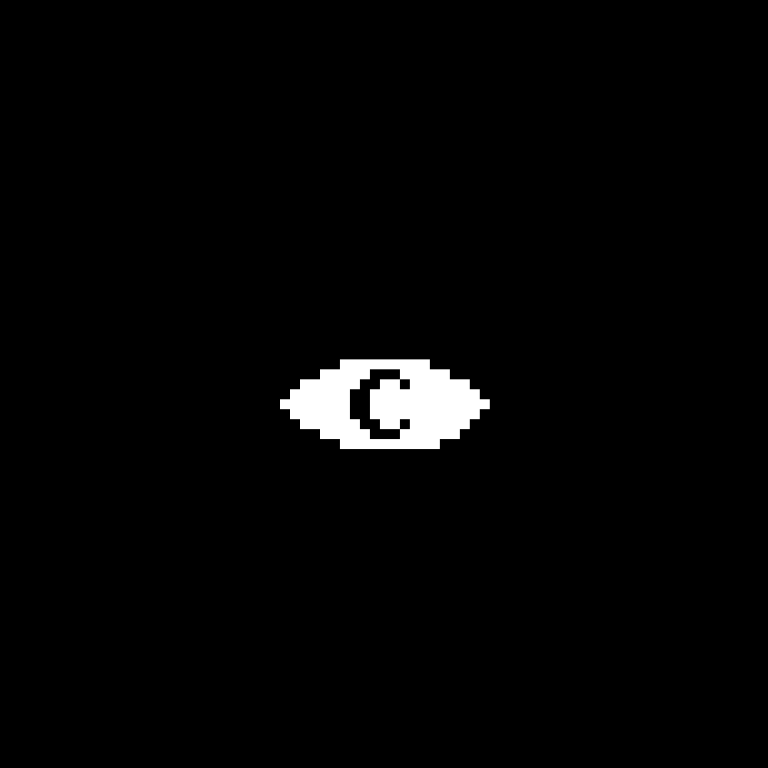

PROJECT OVERVIEW
Portal 2 with RTX is our ambitious project to bring NVIDIA's RTX ray tracing technology to Valve's beloved Portal 2 game. This mod enhances the visual fidelity while maintaining the iconic art style and atmosphere that made the original game a masterpiece.
Using modern graphics techniques, we're reimagining the sterile laboratories, industrial chambers, and ancient testing facilities of Aperture Science with physically accurate lighting, reflections, and shadows.
Development Status: In Progress
Subscribe for Updates Join Our DiscordPROJECT HIGHLIGHTS
KEY FEATURES
Our Portal 2 RTX mod introduces numerous visual and technical improvements:
Ray Traced Global Illumination
Experience realistic light bounces and color bleeding that bring the test chambers to life.
Accurate Reflections
See perfect reflections in glass, polished surfaces, and the iconic portal liquid.
Dynamic Shadows
Realistic shadows that respond to all light sources including portal-transmitted light.
Enhanced Portal Effects
Redesigned portal effects with proper light transmission between linked portals.
About This Game
It's been a long time. How have you been?
Step back into the world of Aperture Science like never before. Portal 2 with RTX reimagines the award-winning puzzle-platformer with cutting-edge ray tracing, physically based textures, and enhanced high-poly models. Experience the mind-bending physics, iconic humor, and thrilling challenges with updated lighting and advanced reflections, making every test chamber feel more immersive than ever.
Portal 2 RTX is a free DLC for all Portal 2 owners, developed by NightSightProductions, a dedicated team of community-driven developers passionate about bringing new life to classic games. Using the latest RTX Remix technology, this project leverages full ray tracing, DLSS 4 with ray reconstruction, and Reflex to deliver unparalleled visual fidelity and responsiveness.
Whether you're escaping GLaDOS' grasp or tackling cooperative puzzles with a friend, Portal 2 with RTX breathes new life into one of the greatest games of all time.
BEFORE & AFTER
See a comparison of one of our redone textures:


Drag the slider to compare the original Portal 2 textures with our physically-based materials and ray traced lighting. Notice the realistic reflections, improved shadows, and enhanced surface details.
FREQUENTLY ASKED QUESTIONS
When will Portal 2 with RTX be released?
We're currently in active development with no fixed release date. Join our Discord for the latest updates on our progress.
What are the system requirements?
For the best experience, we recommend an RTX-capable GPU (NVIDIA RTX 2060 or better). We're also working on optimizations for AMD cards and the Steam Deck.
Will this work with the original game?
Our mod will work with the standard Steam version of Portal 2. No special edition required.
Will this support co-op play?
We're currently uncertain about co-op functionality. While we'd like to support the co-op campaign, there are technical challenges we're still evaluating. Join our Discord for updates on this feature.